| 파이터 | | | 매직 유저 | | | 시프 | | | 클레릭 | | | 드워프 | | | 엘프 |
| 기본 정보 | | | 기본 조작 | | | 이도류 | | | 고급 조작 | | | 콤보의 법칙 | | | 12연사 |
FIGHTER
A 공격
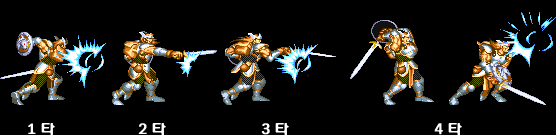
평상시 A버튼을 눌렸을 때의 공격으로 4개의 동작으로 이루어 지며 마지막 4타 공격의 경우 적을 튕겨내는 기능이 있
다. 빠른데다가 판정이 정말 넓은 가장 이상적인 평타 공격이다.
어느정도 판정이 넓냐 하면 몸통 전체에 판정이 생겨서 공격 도중에 뒤에서 셰도우 엘프가 뛰어들 경우 셰도우 엘프의 공격이 명중하는게 아니라 오히려 파이터의 공격이 셰도우 엘프에게 맞을 정도다.
다만 마지막 4타의 발동속도가 꽤 느리기 때문에 동작이 빠른 적들에게는 주의할 필요가 있다. 무리하게 4타까지 집어넣으려 하기 보다는 3타가 끝나기 전에 다른 공격으로 캔슬하는게 나을 수도 있다.
다. 빠른데다가 판정이 정말 넓은 가장 이상적인 평타 공격이다.
어느정도 판정이 넓냐 하면 몸통 전체에 판정이 생겨서 공격 도중에 뒤에서 셰도우 엘프가 뛰어들 경우 셰도우 엘프의 공격이 명중하는게 아니라 오히려 파이터의 공격이 셰도우 엘프에게 맞을 정도다.
다만 마지막 4타의 발동속도가 꽤 느리기 때문에 동작이 빠른 적들에게는 주의할 필요가 있다. 무리하게 4타까지 집어넣으려 하기 보다는 3타가 끝나기 전에 다른 공격으로 캔슬하는게 나을 수도 있다.
다운 공격
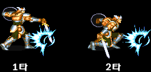
쓰러진 적, 혹은 스콜피온에게 접근해서 A버튼을 눌렀을 때 발동하는 공격.
역시 발동속도도 빠르고 판정도 좋아서 가장 이상적인 다운 공격이다.
(1타 2타는 그냥 모션의 차이일 뿐 별 의미는 없다)
역시 발동속도도 빠르고 판정도 좋아서 가장 이상적인 다운 공격이다.
(1타 2타는 그냥 모션의 차이일 뿐 별 의미는 없다)
투 핸디드 소드 장비시의 A공격
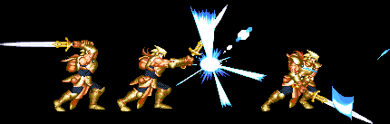
3타의 공격으로 바뀌고 각 타격간의 모션이 동일 해 진다.
발동속도가 좀 더 느려지고 3타째에는 무조건 적이 쓰러지므로 일반 A공격에 비해 성능이 떨어진다.
쓰러진 적에게 공격을 넣으려면 바로 위에서 공격해야 한다.
발동속도가 좀 더 느려지고 3타째에는 무조건 적이 쓰러지므로 일반 A공격에 비해 성능이 떨어진다.
쓰러진 적에게 공격을 넣으려면 바로 위에서 공격해야 한다.
강공격 (방향키를 앞으로 하면서 A)
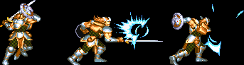
전작 TOD에서는 발동속도가 느려도 데미지가 일반 공격보다 강력해서 자주 쓰였지만 SOM으로 오면서 느린 속도는 그대로 인데 데미지는 일반 공격과 동일한 수준으로 떨어져서 거의 안쓰는 공격. 맞은 적은 튕겨나가는 효과가 생겼지만 발동속도가 느리니 틈을 노리기도 쉽지 않다.
굳이 쓸만한 곳을 찾자면 콤보를 넣을 때 일반공격 대신 1히트를 넣고 싶다거나 아니면 공중에 뜬 적을 구석으로 몰거나 할 때 정도랄까. 오히려 원하지 않았는데 이 공격이 나가는 경우가 있어서 원성을 듣기도 한다.
굳이 쓸만한 곳을 찾자면 콤보를 넣을 때 일반공격 대신 1히트를 넣고 싶다거나 아니면 공중에 뜬 적을 구석으로 몰거나 할 때 정도랄까. 오히려 원하지 않았는데 이 공격이 나가는 경우가 있어서 원성을 듣기도 한다.
투핸디드 소드 장비시의 강공격
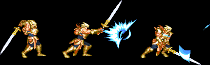
일반 강공격에 비해 발동속도가 빠르다. 아니 사실 투핸디드 소드를 장비했을 때의 일반 A공격과 별 차이가 없다.
뒤돌아보기 공격 (방향키를 뒤로 하면서 A)
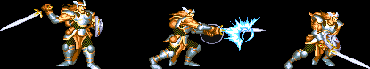
뒤쪽으로 돌면서 베는 공격인데 발동속도는 빠르지만 잘못하면 강공격이 나간다. 별로 쓸 곳은 없다.
대쉬 공격 (대쉬 중 A)
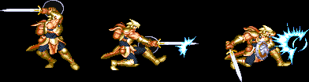
빠르게 적에게 접근해서 공격하는 용도로 쓰며 맞은 적은 쓰러진다.
공격을 한 뒤에 빈틈이 많아서 단독으로 쓰기엔 부담이 있다. 보통은 캔슬해서 슬래쉬로 연결하는게 좋다.
공격을 한 뒤에 빈틈이 많아서 단독으로 쓰기엔 부담이 있다. 보통은 캔슬해서 슬래쉬로 연결하는게 좋다.
슬래쉬 (↓↘→ A)
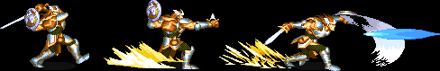
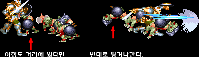
앞쪽으로 빠르게 전진하면서 가로베기를 하는 공격으로 발동속도/판정이 중간 정도인 아주 평균적인 공격이다.
그런데 플레이어와 너무 가까이 있는 적들은 맞으면 반대편으로 튕겨나간다. 콤보를 넣을 때 거리에 주의하도록 한다.
그런데 플레이어와 너무 가까이 있는 적들은 맞으면 반대편으로 튕겨나간다. 콤보를 넣을 때 거리에 주의하도록 한다.
대공기 (↓↑ A)
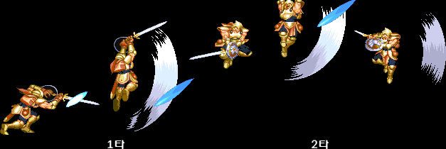
적을 띄운 후 공중에서 한번 더 공격을 넣는 2단 공격으로 전 클래스 중 판정이 가장 좋다.
맞은 적들은 공중으로 뜨며 커맨드 입력 후 A버튼을 바로 때면 1타만 나가며 A버튼을 계속 누르고 있거나 1타 공격이 나가는 중에 A버튼을 누르면 2타째 공격이 나간다.
콤보 수를 초기화 시키는 성능이 있어서 일반 몬스터와 특정 보스에게는 무한정 콤보를 넣을 수도 있다.
보기와는 달리 1타 공격에 하단 판정이 있어서 쓰러진 적에게도 1타 공격의 명중이 가능하다.
맞은 적들은 공중으로 뜨며 커맨드 입력 후 A버튼을 바로 때면 1타만 나가며 A버튼을 계속 누르고 있거나 1타 공격이 나가는 중에 A버튼을 누르면 2타째 공격이 나간다.
콤보 수를 초기화 시키는 성능이 있어서 일반 몬스터와 특정 보스에게는 무한정 콤보를 넣을 수도 있다.
보기와는 달리 1타 공격에 하단 판정이 있어서 쓰러진 적에게도 1타 공격의 명중이 가능하다.
A+B (HP 12 소모)
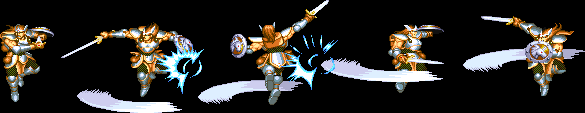
칼을 들고 세번 회전하는 공격으로 회전하는 동안은 모든 공격에 대해서 데미지를 입지 않는다.
쓰러졌을 때 중단공격이 들어가는 적들이나 샐러맨더/레드 드래곤/Synn에게는 2히트가 들어간다.
발동속도도 빠르고 판정도 넓고 강력한 완벽한 무적 회피기로 공격을 당한 적들은 공중으로 뜨거나 구석으로 튕겨나가는데 이를 이용해서 주위에 몰려있는 적들을 한방향으로 몰고 콤보를 넣는 전술도 가능하다.
쓰러졌을 때 중단공격이 들어가는 적들이나 샐러맨더/레드 드래곤/Synn에게는 2히트가 들어간다.
발동속도도 빠르고 판정도 넓고 강력한 완벽한 무적 회피기로 공격을 당한 적들은 공중으로 뜨거나 구석으로 튕겨나가는데 이를 이용해서 주위에 몰려있는 적들을 한방향으로 몰고 콤보를 넣는 전술도 가능하다.
점프 공격
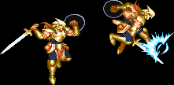
아주 평범한 점프 공격으로 발동은 빠르지만 칼을 내뻗는 순간만 판정이 있기 때문에 별로 쓸 곳은 없다.
대쉬 점프 공격
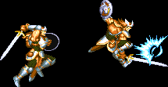
모션은 일반 점프 공격과 크게 다르지 않지만 공중에서 맞은 적은 구석으로 튕기는 효과가 있다.
갑옷을 입어서 인지는 모르겠지만 대쉬 점프/공격/찍기 후에는 착지 모션의 딜레이가 타 클래스보다 긴 편이다.
갑옷을 입어서 인지는 모르겠지만 대쉬 점프/공격/찍기 후에는 착지 모션의 딜레이가 타 클래스보다 긴 편이다.
투 핸디드 소드 장비시의 대쉬 점프 공격
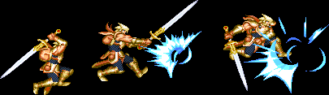
일반 대쉬 점프 공격과 달리 공중에서 맞아도 적이 튕겨나가지 않는다. 일반 점프 공격과 다를게 없는 공격.
모션은 대쉬 공격과 거의 똑같다.
모션은 대쉬 공격과 거의 똑같다.
점프 찍기 공격 (점프 중 ↓ A)
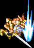
점프 공격과는 달리 판정이 오래 유지 되서 누워있는 적에게도 공격이 들어간다.
판정 자체도 넓어서 점프 공격보다 유용하게 쓸 수 있다.
판정 자체도 넓어서 점프 공격보다 유용하게 쓸 수 있다.
앉아서 공격
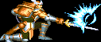
그 자체로는 쓸 곳이 거의 없고 보스전에서 에뮬레이터의 연사기능(일명 12연사)를 이용할 때 쓰는데 보기와는 달리 중단 판정을 가지고 있어서 통하는 보스는 둘 뿐이다.
투 핸디드 소드를 장비했다면 앉아서 공격을 해도 서 있을 때의 공격이 나간다.
12연사에 대한 자세한 내용 보기(Click)
투 핸디드 소드를 장비했다면 앉아서 공격을 해도 서 있을 때의 공격이 나간다.
12연사에 대한 자세한 내용 보기(Click)
슬라이딩 (↓↘→ B)
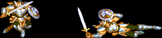
돈과 포션을 습득할 때, 빠르게 이동할 때 쓰는 액션.
백스텝 (BB, 혹은 A공격이나 강공격/대쉬 공격중 캔슬하면서 B)
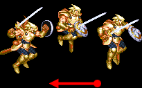
화살표만큼 뒤로 살짝 점프를 한다. 보통은 방향을 유지하면서 거리를 살짝 벌려야 할 때 쓰는게 적절하며 특수한 용도로는 전설의 검의 저주를 풀 때 쓰기도 한다.
공중에 떠 있는 도중에 점프 공격이나 찍기 공격이 가능하며 각 공격의 캔슬이 되기 때문에 이를 이용한 '백점프 콤보'라는 것도 가능하다. 이 콤보는 파이터 고급 조작을 참고하도록 한다.
클레릭이나 엘프에 비해 약간 무겁게 착지하는 감이 있다.
공중에 떠 있는 도중에 점프 공격이나 찍기 공격이 가능하며 각 공격의 캔슬이 되기 때문에 이를 이용한 '백점프 콤보'라는 것도 가능하다. 이 콤보는 파이터 고급 조작을 참고하도록 한다.
클레릭이나 엘프에 비해 약간 무겁게 착지하는 감이 있다.
발차기
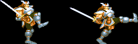
아이템의 빈창을 맞춘후 D키를 누르거나 A공격 후 버튼을 꾹 누르고 있으면 나가는 공격이다.
맞은 적은 구석으로 튕겨져 나가며 튕기는 적에 맞은 다른 적 또한 튕겨 나가는 효과가 있다. 리치가 전 클래스 중 가장 긴 편에 속하고 튕겨나간 적에게 후속 콤보를 넣어 줄 수 있으나 발동 속도도 느리고 데미지가 매우 낮다는 단점이 있어서 거의 쓸 일이 없다.
무기를 이용한 공격이 아님에도 불구하고 무기의 속성을 따라가서 3대 속성검이나 전설의 검을 들었다면 발차기로 가고일에게 데미지를 줄 수도 있다. 단, 불타거나 얼거나 하는 효과는 생기지 않는다.
맞은 적은 구석으로 튕겨져 나가며 튕기는 적에 맞은 다른 적 또한 튕겨 나가는 효과가 있다. 리치가 전 클래스 중 가장 긴 편에 속하고 튕겨나간 적에게 후속 콤보를 넣어 줄 수 있으나 발동 속도도 느리고 데미지가 매우 낮다는 단점이 있어서 거의 쓸 일이 없다.
무기를 이용한 공격이 아님에도 불구하고 무기의 속성을 따라가서 3대 속성검이나 전설의 검을 들었다면 발차기로 가고일에게 데미지를 줄 수도 있다. 단, 불타거나 얼거나 하는 효과는 생기지 않는다.
서있는 방향의 반대편 방향키와 A를 누른채로 유지하거나 아이템 칸의 방패를 선택한 상태에서 D키를 누르면 가드 모션이 발동한다. 가드를 성공한 후 잠깐 동안은 캐릭터가 무적 상태가 되며 가드 후 바로 방향키를 앞으로 하면 카운터 공격으로 대공기가 발동한다.
연사기능을 이용 할 경우는 A를 누른 채로 유지할 수 없으니 아이템 칸의 방패를 이용해야 한다.
가드를 한다고 해서 전신에 가드 판정이 생기는게 아니라 방패부분에만 생긴다는 점을 명심하도록 한다.
또한 아이템 칸의 방패를 이용하는 경우 D키를 이용할 수 없는 상황에서는 가드 발동이 안된다는 점도 주의해야 한다.
(리치/텔'아린 등의 주문 시전시, 레드 드래곤/synn의 브레스 방출시)
연사기능을 이용 할 경우는 A를 누른 채로 유지할 수 없으니 아이템 칸의 방패를 이용해야 한다.
가드를 한다고 해서 전신에 가드 판정이 생기는게 아니라 방패부분에만 생긴다는 점을 명심하도록 한다.
또한 아이템 칸의 방패를 이용하는 경우 D키를 이용할 수 없는 상황에서는 가드 발동이 안된다는 점도 주의해야 한다.
(리치/텔'아린 등의 주문 시전시, 레드 드래곤/synn의 브레스 방출시)
| 기본 정보 | | | 기본 조작 | | | 이도류 | | | 고급 조작 | | | 콤보의 법칙 | | | 12연사 |
| 파이터 | | | 매직 유저 | | | 시프 | | | 클레릭 | | | 드워프 | | | 엘프 |